|
Scrolling a WindowPeople use scroll bars to change which part of a document is shown in a window. Only the active window can be scrolled. This section describes the appearance and behavior of scroll bars and their controls. Figure 5-27 shows a conceptual view of a document and the portion of it that appears in a window.Figure 5-27 Relationship between a window and a document 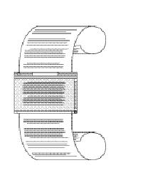 Scroll BarsA scroll bar is a light gray rectangle that has an arrow in a box at each end of the rectangle. Windows can have a horizontal scroll bar, a vertical scroll bar, or both. A vertical scroll bar appears on the right side of the associated window. A horizontal scroll bar runs along the bottom of the window. Inside the scroll bar is a rectangle called the scroll box. At either end of the scroll bar is an arrow that points towards the portion of a document still hidden from view; clicking the arrow displays more of the document by scrolling it into view. The rest of the scroll bar is called the gray area. Figure 5-28 shows the elements of a scroll bar.Figure 5-28 The elements of a scroll bar 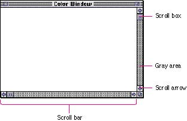 A scroll bar represents one dimension, top to bottom or right to left, of the entire document. The scroll box represents the relative location, in the whole document, of the portion that can be seen in the window. If the user clicks a scroll arrow or clicks in the gray area, the document "moves" and the scroll box moves along with it. If the user drags the scroll box and releases the mouse button, the document "moves" along with it. Figure 5-29 illustrates these behaviors. Figure 5-29 Using scroll arrows and the scroll box 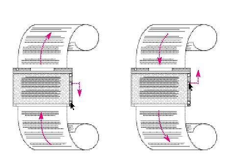 If the document is no larger than the window, the scroll bars are inactive. This means that the rectangles are outlined, but there is no gray area, no scroll box, and the arrows are hollow (their outlines appear). If the document window is inactive, don't show the elements of the scroll bar at all; only the outline of the scroll bar as a whole should appear. Figure 5-30 shows an active document window with inactive scroll bars and an inactive document window with inactive scroll bars. Figure 5-30 Inactive scroll bars in active and inactive document windows 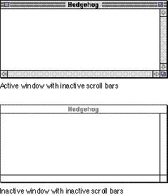 If a document has a fixed size that is smaller than the maximum size of the window, and the user scrolls to the right or bottom edge of the document, your application can display a gray background between the edge of the document and the window frame. This background indicates to the user that the content area has a fixed size that is smaller than the maximum size of the window. Figure 5-31 shows an example of a document with this gray background. Figure 5-31 Background between the content and the window frame 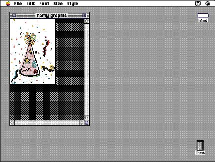 |
|
|
Many applications add features like controls to windows in
the scroll bar region. Since the scroll bars are used
frequently, it's best not to add lots of additional
controls to this area of the window. Generally it's best to
minimize the complexity of your application's interface and
use the established graphical language. It's OK to add one
control, like a split bar, which allows users to split a
window into panels, to the top of the vertical scroll bar.
But if you add more than one control to this area, it's
hard for people to distinguish controls, and to click
exactly the desired control. Also from an implementation
standpoint, it's difficult to design small symbols and
pictures that effectively convey the action of the control.
Another addition to the window that's not too intrusive is a status bar at the left side of the horizontal scroll bar. This bar doesn't take up much space, while providing useful information to the user. It also doesn't reduce the working size of the scroll bar by too much. |
|
Figure 5-32 shows scroll bars
with acceptable additions; the horizontal scroll bar has a
page indicator and the vertical scroll bar has a split bar.
Figure 5-32 Acceptable additions to the scroll bar region 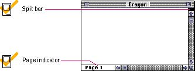 Some applications include a page number inside the scroll box to indicate the position of the document. This allows the user to see the page number change as the document scrolls. It also provides information without adding complexity to the window. To ensure that the controls that you include in the window are easy to use and understand, it's best to place the majority of your features in the menus as commands. Figure 5-33 shows a window with too many controls in the scroll bars. If you really want to provide additional access to features, consider creating a utility window such as a palette with buttons. For more information on palettes, see "Tear-Off Menus and Palettes" on page 74 in Chapter 4, "Menus." Figure 5-33 Too many controls in the scroll bar 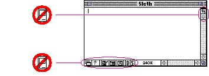 Scrolling With the Scroll ArrowsWhen the user clicks or presses one of the scroll arrows, more of the document in the direction of the scroll arrow appears, so the document seems to move in the opposite direction. Clicking the arrow means, "Show me more of the document that's hidden in this direction." When the user clicks the bottom scroll arrow, for example, the document moves up, bringing what was just below the window into view. Pressing the scroll arrow causes continuous movement in the appropriate direction. Figure 5-34 shows the change in a document when a user scrolls by clicking a scroll arrow.Figure 5-34 Scrolling by clicking a scroll arrow 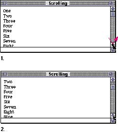 The scroll box moves in the direction of the arrow being clicked. It continues to represent the approximate position of the visible part of the document in comparison to the whole document. Each click in a scroll arrow causes movement of the content a distance of one unit in the chosen direction. Your application determines what one unit equals. For example, a word processor would move one line of text for each click in the arrow. A spreadsheet would move one row or one column depending on the direction of the arrow. To ensure smooth scrolling effects, it's usually best to specify units of the same size throughout a document. Scrolling With the Gray AreaClicking in the gray area of the scroll bar advances the document by a windowful. The scroll box and the document view move toward the location where the user clicked. For example, when the user clicks in the area below the scroll box, the document view moves to the next windowful toward the bottom of the document. Figure 5-35 shows how a user scrolls by clicking in the gray area.Figure 5-35 Scrolling by clicking in the gray area 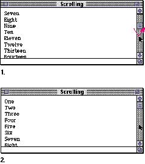 Pressing in the gray area causes the display of consecutive windowfuls of the document, until the user releases the mouse button, or until the location of the scroll box catches up to the location of the pointer. A windowful equals the height or width of the window, minus at least one unit of overlap to maintain the user's context. This unit of overlap is the same measurement determined for scroll arrow movement. By retaining this unit of information, you provide a reference point for the user. On keyboards with function keys, the Page Up and Page Down keys also move the document view by a windowful. Scrolling by Dragging the Scroll BoxThe scroll box shows the position of the visible portion of the document in relationship to the whole document. If the scroll box is halfway between the top and bottom of the scroll bar, then what the user sees is about halfway through the document. To scroll the document, the user drags the scroll box. To see the beginning of the document, the user drags the scroll box to the top of the scroll bar; to see the end, the user drags the scroll box to the bottom. This behavior allows the user to quickly move around in the document. The user can get from one end of a long document to the other faster by dragging the scroll box than by clicking in the gray area or pressing the scroll arrows. Figure 5-36 shows how a user scrolls by using the scroll box.Figure 5-36 Scrolling by dragging the scroll box 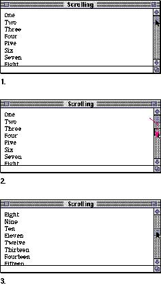 If the user starts dragging the scroll box, then moves the pointer out of the scroll bar, the scroll box stops following the pointer and snaps back to its original position. The user can move the pointer out of the scroll bar region by a little more than the width of the scroll box before the scroll box snaps back. If the user then releases the mouse button, no scrolling occurs. But if the user, still holding down the mouse button, moves the pointer back into the scroll bar, the scroll box resumes its movement in the direction of the pointer. This type of tracking is standard behavior for controls in general, such as buttons, checkboxes, and radio buttons. Automatic Scrolling |
|
In all the
discussions of scrolling behavior and appearance in the
previous sections, the user controls scrolling behavior by
deciding which control to use and how long to use it. Most
of the time, the user should be in control. However, there
are four cases where your application must scroll the
document.
|
|
|
Figure 5-37 Automatic scrolling
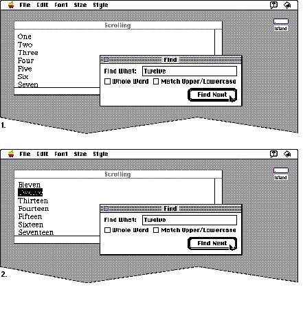
If your application can scroll in one orientation to reveal the selection, don't scroll in both orientations. That is, if you can scroll vertically to show the selection, don't also scroll horizontally. When you can show context on either side of a selection, it's useful to do so. It's also better to position a selection somewhere near the middle of a window than right up against a corner. When the selection is too large to show the entire selection in the window, it might be a good idea to show some context next to it rather than having the selection fill the window. For more information about document scrolling, see Inside Macintosh: Macintosh Toolbox Essentials. |